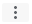

매출채권팩토링 서비스


2022년 중진공 매출채권팩토링 예산 : 375억 / 집행액 : 315억
* 팩토링 신청시 참고하시기 바랍니다.
* 팩토링 평가는 판매기업 신청 후, 구매기업 동의순으로 진행
* 기업별 최대 연간한도 : 구매기업 30억, 판매기업 10억(팩토링 지원시 한도 차감)
- 단, 기업별 연간한도는 최근 결산 재무제표상 매출액의 1/3이내(제조업 1/2이내)
* 자세한 지원내용은 아래의 팩토링 공고를 통해 확인 가능
매출채권팩토링 서비스 개요
매출채권팩토링 서비스는? 거래처의 외상매출대금 빠르게 지급받는 서비스
매출채권팩토링 서비스는 기업활동 과정에서 재화나 서비스 제공을 통해 발생된 외상매출채권 대금을 거래처에서 지급하기전, 외상매출채권을 중소벤처기업진흥공단에 양도하여 외상매출대금을 빠른 시일 내 현금화 할 수 있는 서비스입니다.
본 서비스는 중진공팩토링플랫폼을 통해 제공되기 때문에 중진공팩토링플랫폼 회원가입이 필수입니다.
중소벤처기업진흥공단은 신청 기업의 자금공급자로 참여하며, 기업신용평가를 위하여 세무회계자료제공 동의가 필요합니다.

최근 3개년 재무제표 조회
| 구분 | ||||
|---|---|---|---|---|
| 제출여부 |
* 결산재무제표 3개년 업로드 이후, 중진공으로 데이터가 수신되기까지 최대 1일 소요될 수 있습니다.
결산재무제표 3개년 업로드
- 문의처 02-3771-1050
- 이메일 : nicesbc_cs@nice.co.kr
※ 최초 자료제출 시에는 제출프로그램이 설치됩니다.
(최초 프로그램 설치 시에는 프로그램 설치를 위해 인터넷 브라우저가 종료됩니다.)
※ 자료 제출 프로그램 이용 전 유의사항 : 국세청 홈택스에 등록된 공동인증서로 로그인하셔야 합니다.
※ 유선/이메일 문의 시 업체의 사업자번호와 민원증명 발급번호 및 해당 결산연도를 말씀해주시면 신속히 안내 받으실 수 있습니다.
자가진단
허위 자가진단 결과를 제출하는 기업은 확인일로부터 1년간 팩토링 신청이 제한됩니다.
* 자가진단 허위기재시 민사 소송 제기 및 형사고소등을 할 수 있습니다.
1. 지원제외 업종 영위 기업 지원제외 업종 확인
2. 휴폐업중인 기업
3. 세금체납중인 기업
4. 다음의 정보가 등록되어 있는 기업
- 연체, 대위변제, 대지급, 부도, 관련인, 금융질서문란, 회생, 파산 기업(한국신용정보원 ‘신용정보관리규약’에 의함)
- 중진공 및 금융권의 대출금을 연체중인 기업
- 최근 3년 이내 정책자금 제3자 부당개입 등 허위 부정한 방법으로 융자신청
- 최근 3년 이내 사업장 임대 등 정책자금 지원시설의 목적 외 사용
- 최근 1년 이내 약속어음 감축 특약 미이행
- 최근 3년 이내 중기부 소관 정부연구개발비의 위법 또는 부당한 사용으로 지원금 환수 등 제재조치된 기업
- 임직원의 자금횡령 등 기업경영과 관련하여 사회적 물의를 일으킨 기업
- 2년 연속 적자기업 중 자기자본 전액 잠식 기업
- 최근 3년 연속 '이자보상배(비)율 1.0미만'이고, 3년 연속 '영업활동 현금흐름이 (-)인 기업)(단, 최근 결산연도 유형자산과 R&D투자금액이 모두 전년도 대비 2.5% 이상 증가한 기업은 예외)
5. 신청 예정인 매출채권이 동일기업집단간 거래여부
동일기업집단
- 개인기업과 개인기업 : 대표자(대표자의 배우자 및 직계 존ㆍ비속 포함)가 동일인인 경우
- 개인기업과 법인기업 : 개인기업의 대표자(대표자의 배우자 및 직계 존ㆍ비속 포함)가 법인의 출자 지분 또는 발행 주식 총수의 30% 이상을 소유하고 있는 경우. 다만, 분사기업에 대해서는 예외로 한다.
- 법인기업과 법인기업 : 출자지분 또는 발행주식 총수의 10% 이상을 소유하고 있는 동일주주 지분의 합이 각각 30% 이상인 경우 또는 한 법인이 다른 법인의 출자지분 또는 발행주식 총수의 30% 이상을 소유하고 있는 경우. 다만, 분사기업에 대해서는 예외로 한다.
- 그 밖에 경영권을 실질적으로 행사하고 있는 자가 동일인인 경우
6. 신용보증기금 및 기술보증기금 등 타금융권 팩토링 사용 매출채권여부
7. [판매기업에 한함] 다음의 정보가 등록되어 있는 기업 (구매기업은 미해당 체크)해당미해당
- 중소기업확인서상 소상공인으로 확인된 기업(단, 제조업 소상공인은 지원가능)
- 유가증권 코스닥 시장 상장기업, '자본시장법'에 의한 신용평가 회사의 BB등급 이상 기업(단, 코스닥 기술특례상장기업은 상장 후 3년까지 예외)
- 중진공 신용위험등급 최상위 등급(CR1)
- 최근 재무제표 기준 자본총계 200억원 또는 자산총계 700억원 초과기업
매출채권팩토링 신청하기
매출채권팩토링 신청이 처음이시면 먼저 [회원가입] 버튼을 통해 플랫폼에 회원가입 및 안내 절차에 따라 진행해야 합니다. 매출채권팩토링 신청을 1회 이상 하신 기존 고객은 [신청하기] 버튼을
통해 플랫폼에 로그인하여 신청하시기 바랍니다.
※판매기업은 국세 지방세 납세증명을 꼭 완료해주시기 바랍니다
※ 매출채권팩토링 신청하기 버튼이 동작하지 않을 경우, 주소창에 매출채권팩토링 사이트 주소( http://kosmes.wehago.com)를 입력하여 진행하시기 바랍니다.
 (주의) 매출채권팩토링 신청시 반드시 팝업차단을 해지해 주시기 바랍니다.
(주의) 매출채권팩토링 신청시 반드시 팝업차단을 해지해 주시기 바랍니다.구글크롬 브라우저 사용시
- 선택1 : Chrome 맞춤설정 및 제어 > 설정 > 개인정보 및 보안 > 사이트설정 > 팝업 및 리디렉션 > 팝업 허용
-
선택2 : Chrome 맞춤설정 및 제어 > 설정 > 개인정보 및 보안 > 사이트설정 > 팝업 및 리디렉션 > 허용 사이트 추가 'kosmes.or.kr'
* Chrome 맞춤설정 및 제어 위치 : 주소창 우측 끝(점 세개 아이콘)Chrome 맞춤설정 및 제어 아이콘 
익스플로러 브라우저 사용시 - 팝업 차단이 설정된 경우
- 선택1.일부 팝업허용 : 도구 > 팝업차단 > 팝업차단 설정 > 허용 할 웹사이트 주소 '*.kosmes.or.kr' 추가
- 선택2.팝업 차단해지 : 도구 > 인터넷 옵션 > 개인 정보(탭) > 팝업 차단 사용 해지
구글툴바(google toolbar) 프로그램 사용시
- 팝업차단기 해지방법 : 화면상단 구글툴바 창 우측 끝의 아이콘 클릭 > 옵션 > 도구 > 팝업차단기 해지